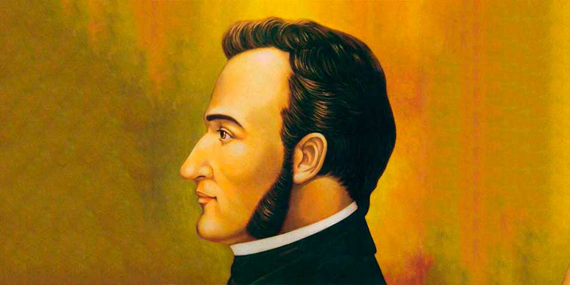

Morazán nació en Tegucigalpa el 3 de octubre de 1792. Fue elegido presidente de la República Federal de Centroamérica en 1830 y reelegido en 1834. La Constitución federal se aprobó el 22 de noviembre de 1824, bajo el lema “Dios, Unión y Libertad”. Se dice que dedicó unos 15 años de su vida a convertir Centroamérica en una sola república federal. Según los datos que encontré, la Federación ya estaba disuelta cuando él salió de Centroamérica en octubre de 1838. En 1839 fue electo presidente de El Salvador. En 1840 intentó salvar la unión atacando Guatemala, sin éxito. Fue ejecutado en Costa Rica el 15 de septiembre de 1842. La unidad regional, el diálogo y la cooperación siguen siendo los valores con que se le recuerda. www.enriquebolanos.org +2 Para dar contexto, los conflictos entre estados, llamados “guerras federales”, marcarons el pensamiento liberal y conservador de la época.
 Nahua
Nahua